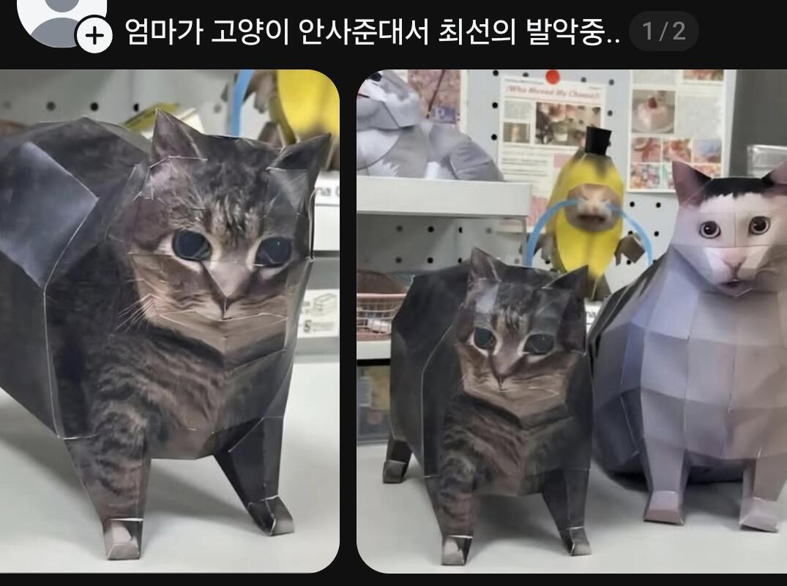

ㅋㅋㅋㅋㅋㅋㅋㅋㅋㅋㅋㅋㅋㅋ

ㅋㅋㅋㅋㅋㅋㅋㅋㅋㅋㅋㅋㅋㅋ
그래서 전기 포충기 사서 쓰는데 효과 좋음 눈부신거 빼고는...
고양이가 아니라 고먐미네..
네마리나 있으니까 이제 안 사줘도 되지?
오이이이아이


고양이 말고 거북이 키워라 .... 생각보다 손이 안가고 크게 아프지도 않고 잘 큰다
대신에 일광욕을 위한 할로겐 등은 필수 ...
무슨거북키우냐
페닌슈타쿨러 ..... 맨첨에 데리고 올때는 500원 동전만해서 이정도면 키우기 편한데? 라고 생각하고
데리고 왔는데 .. 지금은 책상전화기 만한놈 두마리가 되어 버렸다 ... ㅋㅋㅋ
거북이도 품종별로 차이가 커서
흔히 과거에 키우던 붉은귀거북은 20년정도 키우면 그렇게 되는데
아닌종은 그렇게 안크더라 대신 수명이 20년?
저거 붐디기디기디기디기 하면서 회전하는 그놈 아니냐
Oiia 고양이

저 어? 고양이 나올때마다 ㅈㄴ웃김ㅋㅋㅋ

고양이 키우면 성분 때문에 홈매트도 못한다구 회사동료 모기 다 뜯겨서 왔더라 ㄷㄷ